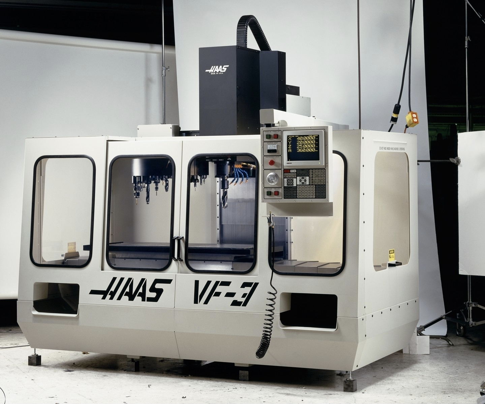

DEVELOPMENT CAD-CAM SUPPORT MANUFACTURABLE PRODUCT DESIGN REVERSE ENGINEERING ASSEMBLY DESIGN MODELLING
 MACHINING Real Haas CNC machining Coolant spraying Tool changing Chips flying Close-up cutting Finished precision part